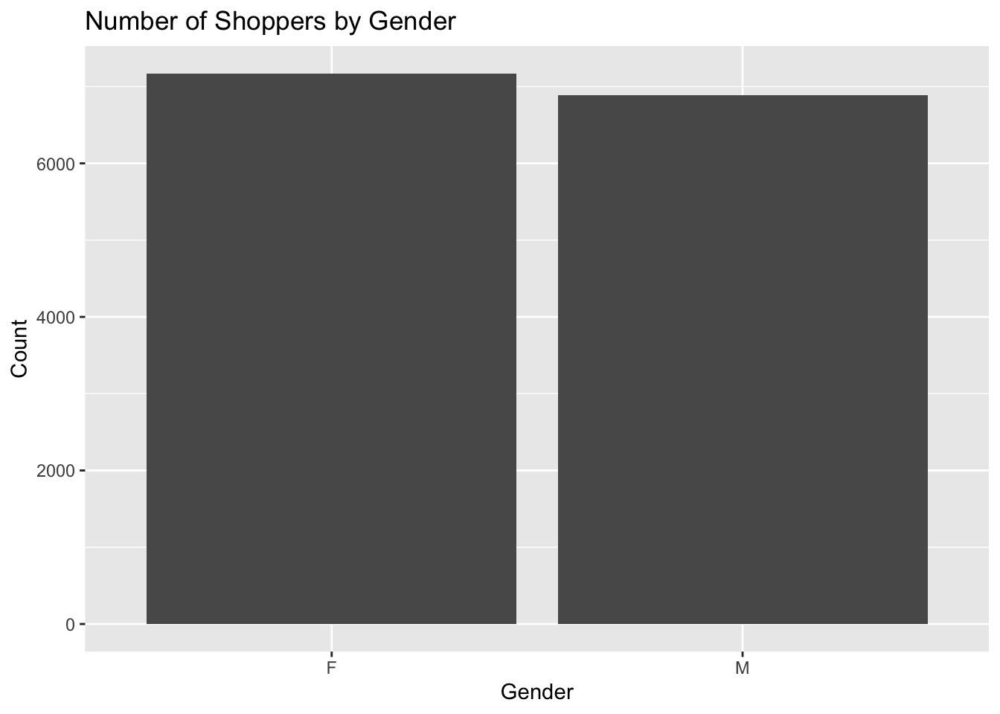
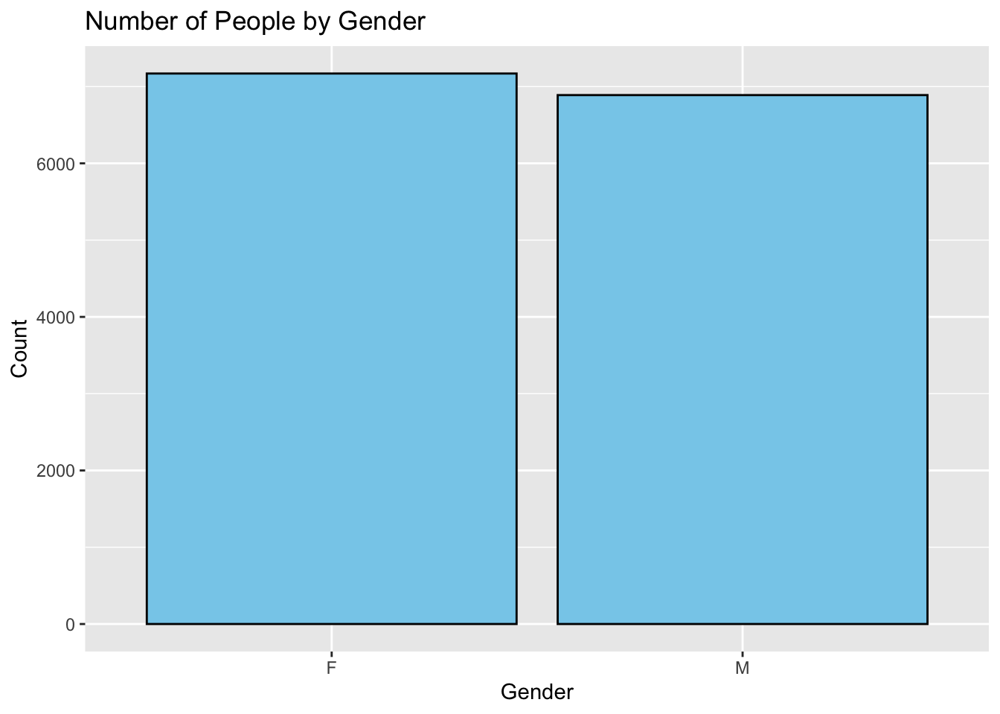
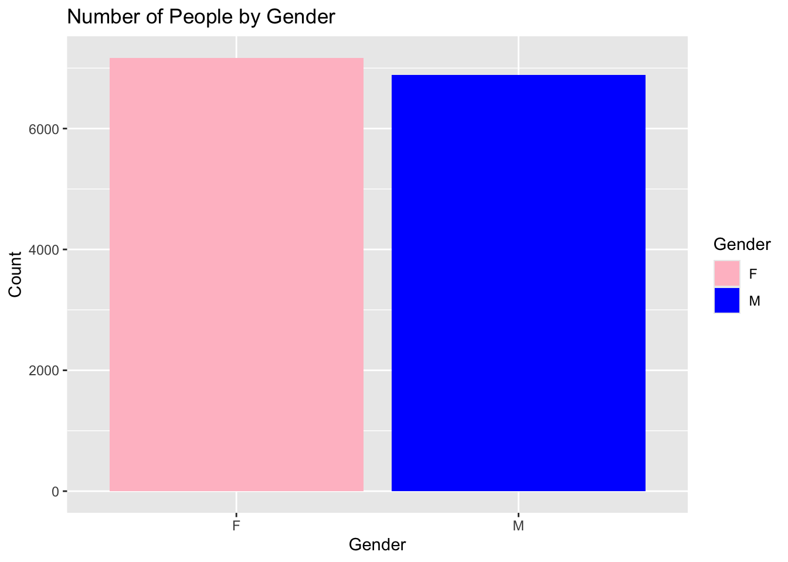
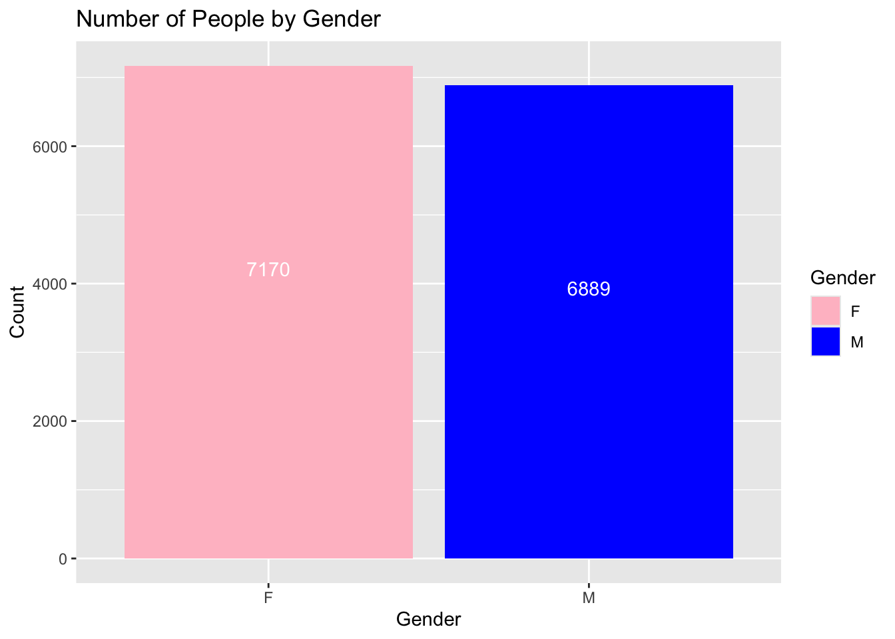
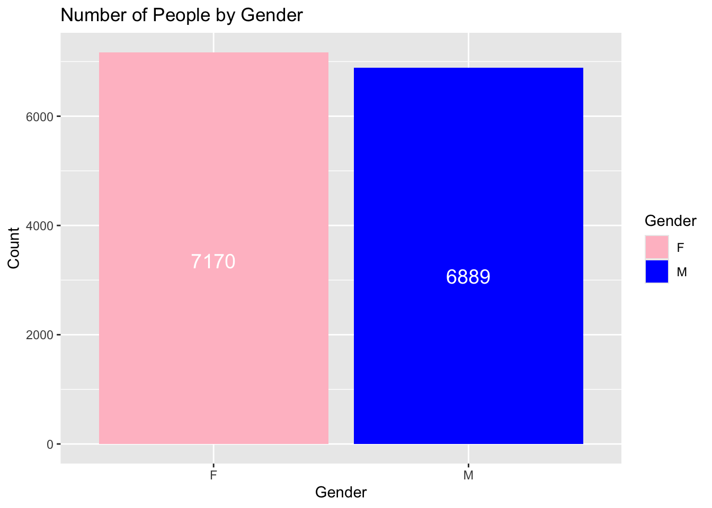
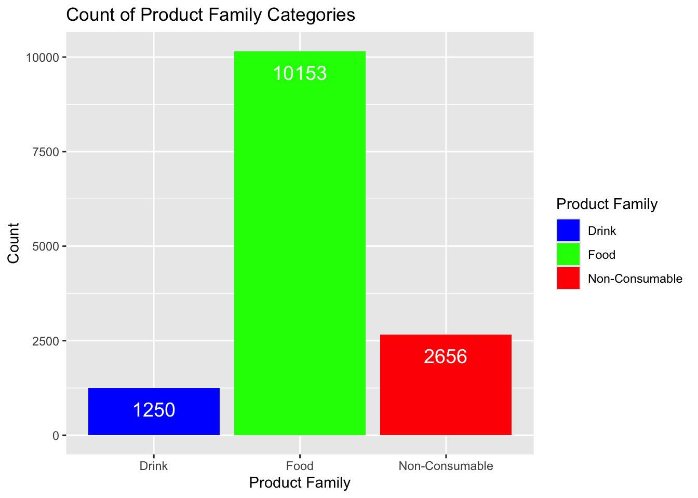
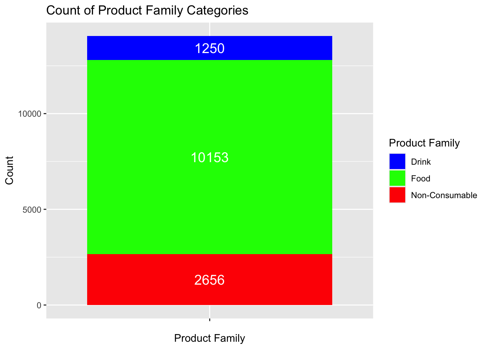
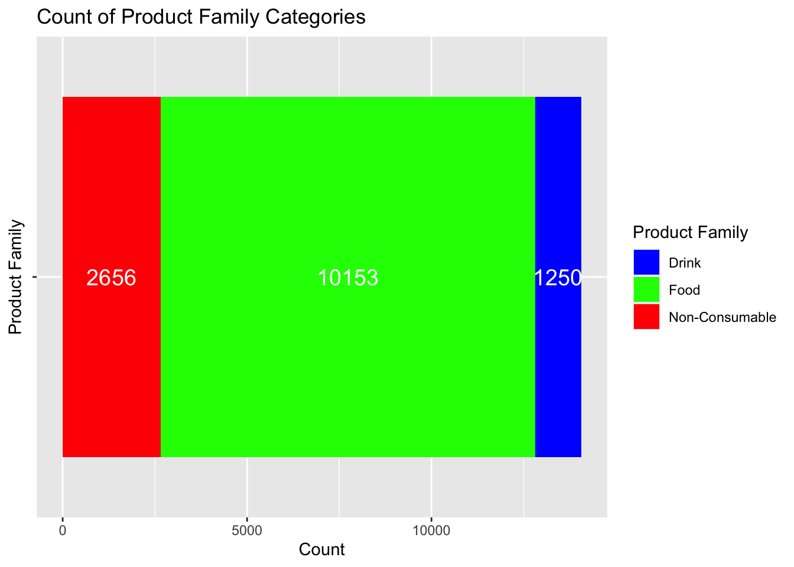
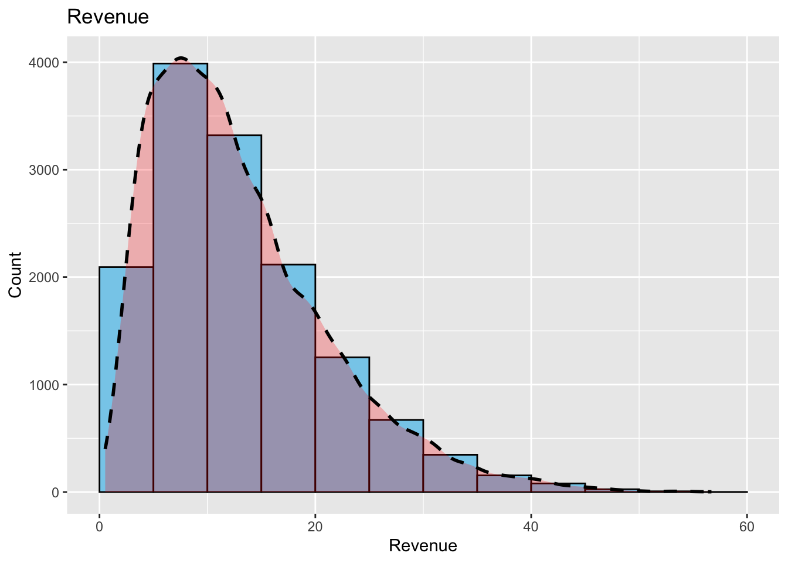

Barplots (or Bar Charts) and Histograms are two of the most common ways to visualize data, but they are often confused with one another.
A barplot is used to display the counts of unique values of a categorical variable, while a histogram is used to display the distribution of a continuous variable.
In this section, we will go over several examples of how to create barplots and histograms in R. There are several techniques one could use to create these plots, but we will focus on the ggplot2 package to create them.
Barplots
Documentation for the bar chart / plot command can be found at the following link:
There are two types of bar charts: geom_bar( ) and geom_col( ). geom_bar( ) makes the height of the bar proportional to the number of cases in each group (or if the weight aesthetic is supplied, the sum of the weights). If you want the heights of the bars to represent values in the data, use geom_col( ) instead.
You should read through this as it shows you all of the different options you have when creating a barplot.
Let’s revisit the data set we discussed in our previous Categorical Variables section. Let’s go back to the Supermarkets Transactions data set to create a few barplots.
Let’s first read in the data :
# Read in the datasupermarket <-read_excel("./Supermarket Transactions.xlsx")# Verify the datahead(supermarket,2)
# A tibble: 2 × 16
Transaction `Purchase Date` `Customer ID` Gender `Marital Status`
<dbl> <dttm> <dbl> <chr> <chr>
1 1 2011-12-18 00:00:00 7223 F S
2 2 2011-12-20 00:00:00 7841 M M
# ℹ 11 more variables: Homeowner <chr>, Children <dbl>, `Annual Income` <chr>,
# City <chr>, `State or Province` <chr>, Country <chr>,
# `Product Family` <chr>, `Product Department` <chr>,
# `Product Category` <chr>, `Units Sold` <dbl>, Revenue <dbl>
In the previous section, we looked at a table that broke down the customers by gender:
Table1 <-table(supermarket$Gender)Table1
F M
7170 6889
We can use ggplot to easily make a barplot of the Gender data. We will create a barplot that has two bars, one for each gender listed in the data set. Note that in the data set, the variable is listed with a capitol letter. The variable we want to use is Gender, and not gender. A small typo such as that can mess uo your entire code.
We will start off the ggplot command by telling the function which data set we are using, and then we will use the aes function to tell ggplot which variable we want to use for the x-axis. We will then use the geom_bar function to create the barplot. Finally, we will use the labs function to add a title to the plot, and to label the x and y axes.
library(ggplot2)# here is how we can create a barplot of the count of male and female gender from the supermarket data setggplot(supermarket, aes(x = Gender)) +geom_bar() +labs(title ="Number of Shoppers by Gender",x ="Gender",y ="Count")

If we wanted to make this look nicer, we could add some color to the bars. The following example will change the color of the bars to skyblue, and the outline of the bars to black. The fill argument is used to change the color of the bars, and the color argument is used to change the color of the outline of the bars.
ggplot(supermarket, aes(x = Gender)) +geom_bar(fill ="skyblue", color ="black") +labs(title ="Number of People by Gender",x ="Gender",y ="Count")

If we are feeling really fancy, we can have the bars with different colors. We will add another layer using the scale_fill_model function. This function will allow us to specify the colors we want to use for each category. In this case, we will use pink for Females and blue for Males. Al you need to do is create a vector that contains the colors you wish to use.
We will also move the fill argument from the geom_bar function to the aes function. This will allow us to use the fill argument in the scale_fill_manual function.
ggplot(supermarket, aes(x = Gender, fill = Gender)) +geom_bar() +scale_fill_manual(values =c("F"="pink", "M"="blue")) +labs(title ="Number of People by Gender",x ="Gender",y ="Count")

We could also add the numbers of each count to the bars. This will help the reader know the exact values from each category.
ggplot(supermarket, aes(x = Gender, fill = Gender)) +geom_bar() +scale_fill_manual(values =c("F"="pink", "M"="blue")) +geom_text(stat ='count', aes(label =after_stat(count)), vjust =-0.5) +labs(title ="Number of People by Gender",x ="Gender",y ="Count")
geom_text(stat = 'count', aes(label = ..count..), vjust = -0.5) is added to display the counts as text on each bar.
stat = 'count' ensures that the text is based on the count of each category.
label = after_stat(count) specifies that the label should be the count.
vjust = -0.5 adjusts the vertical position of the text slightly above the bar. Adjust this value as needed to position the text correctly.
We could move the text to the middle of the bars, by playing around with vjust. I found vjust = 15 is a good value to center the text on the bars in this case. It can change depending on your data sets.
ggplot(supermarket, aes(x = Gender, fill = Gender)) +geom_bar() +scale_fill_manual(values =c("F"="pink", "M"="blue")) +geom_text(stat ='count', aes(label =after_stat(count)), vjust =15, color ="white") +labs(title ="Number of People by Gender",x ="Gender",y ="Count")

We could also change the font size of the text. The following example will change the font size to 5.
ggplot(supermarket, aes(x = Gender, fill = Gender)) +geom_bar() +scale_fill_manual(values =c("F"="pink", "M"="blue")) +geom_text(stat ='count', aes(label =after_stat(count)), vjust =15, color ="white", size =5) +labs(title ="Number of People by Gender",x ="Gender",y ="Count")

Consider the case to where we have more than two variables we want to graph. For example, in the Product Family category, we have three different factors : Drink, Food, and Non-Consumable. We can create a barplot that shows the count of each of these categories.
Notice that the fill argument tells ggplot which variable to use for the color of the bars. We will use the scale_fill_manual function to specify the colors we want to use for each category.
ggplot(supermarket, aes(x =`Product Family`, fill =`Product Family`)) +geom_bar() +scale_fill_manual(values =c("Food"="green", "Drink"="blue", "Non-Consumable"="red")) +geom_text(stat ='count', aes(label =after_stat(count)), vjust =2, color ="white", size =5) +labs(title ="Count of Product Family Categories",x ="Product Family",y ="Count")

Lastly, we could create a barplot where the bars are stacked on top of each other.
ggplot(supermarket, aes(x ="", fill =`Product Family`)) +geom_bar() +scale_fill_manual(values =c("Food"="green", "Drink"="blue", "Non-Consumable"="red")) +geom_text(stat ='count', aes(label =after_stat(count)), position =position_stack(vjust =0.5), color ="white", size =5) +labs(title ="Count of Product Family Categories",x ="Product Family",y ="Count")

These can sometimes look better if drawn horizontally. We can do this by flipping the axis using the coord_flip function.
ggplot(supermarket, aes(x ="", fill =`Product Family`)) +geom_bar() +scale_fill_manual(values =c("Food"="green", "Drink"="blue", "Non-Consumable"="red")) +geom_text(stat ='count', aes(label =after_stat(count)), position =position_stack(vjust =0.5), color ="white", size =5) +labs(title ="Count of Product Family Categories",x ="Product Family",y ="Count") +coord_flip()

Histograms
Histograms are used to display the distribution of a continuous variable.
Documentation for the histogram command can be found at the following link: histogram documentation
There are several arguments that can be used to customize the histogram and you should review the documentation to see all of the options available.
Let’s create a histogram of the Revenue variable from the supermarket data set. We will use the geom_histogram( ) function to create the histogram. We will also use the labs function to add a title to the plot, and to label the x and y axes.
The following is a basic default histogram before any customization:
We will see how we can customize this histogram. We will add color to the bars, change the outline of the bars, and add a fill to the bars. We will also add a title to the plot, and label the x and y axes.
However, one thing to note is that the geom_histogram function has a binwidth argument that can be used to change the width of the bars. The default value is binwidth = 30. This means that the bars will be 30 units wide. If we wanted to make the bars 10 units wide, we would use binwidth = 10. If we wanted to make the bars 5 units wide, we would use binwidth = 5. The smaller the number, the more bars we will have. The larger the number, the fewer bars we will have. A bad choice here could make the histogram look bad. You will need to decide which value best represents your data.
This histogram has too few bars. This does not give us a good picture of the distribution of the data. We can make a histogram where the bin width is 5. Maybe this will give us a better picture of the distribution of the data.
This is better. We can see that the data is skewed to the right. We can also see that there are a few outliers. If we were doing some data analysis, we could remove the outliers and see if the data is normally distributed. We could also try to transform the data to see if it becomes normally distributed. We will not do that here, but it is something to consider when looking at data.
Also notice the locations of the bars. The bars are centered on the x-axis values. This means that the bars are centered on the values 0, 5, 10, 15, 20, and so on. So the first bar has a width of 5 centered at 0. This means the first bar starts at -2.5 and goes to 2.5. The second bar starts at 2.5 and goes to 7.5. The third bar starts at 7.5 and goes to 12.5. And so on. This is not always the best way to display the data. If we want the bars to start at 0 (or some other boundary) we can use the boundary argument. The default value is boundary = 0. This means that the bars will start at 0. If we wanted the bars to start at 5, we would use boundary = 5. If we wanted the bars to start at -5, we would use boundary = -5.
As we did with the baplot, we can add values to the histogram bars. This is a tad tricky, and is not always the best way to display the data. Many journals will include a table outlining the different intervals and counts.
An additional layer that can be added to a histogram to help see the distribution of the data is a density plot. The geom_density function can be used to add a density plot to the histogram. The density plot will show the distribution of the data. The density plot is a smoothed version of the histogram. The density plot is useful when the data is not normally distributed. The density plot will show the distribution of the data, and will show if the data is skewed to the left or right, or if the data is bimodal.
The following example will add a density plot to the histogram. The geom_density function is used to add the density plot. The fill argument is used to change the color of the density plot. The color argument is used to change the outline of the density plot. The size argument is used to change the size of the density plot. The alpha argument is used to change the transparency of the density plot. The linetype argument is used to change the line type of the density plot. The position argument is used to change the position of the density plot. The adjust argument is used to change the adjustment of the density plot.
The difficult part is that you will need to alter the y value in the aes function to get the density plot to show up. The y value is the height of the density plot. You will need to play around with this value to get the density plot to show up. The following example uses y = after_stat(density)*70000.
ggplot(supermarket, aes(x =`Revenue`)) +geom_histogram(fill ="skyblue", color ="black", binwidth =5, boundary=0) +geom_density(aes(y=after_stat(density)*70000), fill ="red", color ="black", linewidth =1, alpha =0.25, linetype ="dashed", position ="stack", adjust =1) +labs(title ="Revenue",x ="Revenue",y ="Count")

For more information on how to create nice histograms, you can read the following :
https://www.appsilon.com/post/ggplot2-histograms
Exercises
In this assignment, you will be working with a small dataset and using R to create basic bar plots and histograms. This exercise will help you get familiar with data visualization techniques, which are essential for data analysis and interpretation.
Skills Checked
Load the Dataset: Load the provided dataset into R.
Bar Plot: Create a bar plot to visualize the data.
Histogram: Create a histogram to visualize the data.
Barplot Dataset 1
The following is a dataset that contains information about the number of students enrolled in different courses at a university. Copy the following dataset into a CSV file named courses.csv and upload it to your working directory. Create an appropriate barchart depicting the data.
Course
Number of Students
Mathematics
45
Physics
30
Chemistry
25
Biology
50
Computer_Science
40
History
35
English
20
Economics
30
Barplot Dataset 2
The following is a dataset that contains sales information about the number of electronic sales at your company. Copy the following dataset into a CSV file named sales.csv and upload it to your working directory. Create an appropriate barchart depicting the data.
Product
Sales
Laptops
120
Smartphones
200
Tablets
80
Accessories
150
Wearables
90
Desktops
70
Cameras
60
Printers
40
Barplot Dataset 3
The following is a dataset that contains monthly rainfall (in millimeters) information for various cities across the United States. Copy the following dataset into a CSV file named rainfall.csv` and upload it to your working directory. Create an appropriate barchart depicting the data.
City
Monthly_Rainfall_mm
New_York
120
Los_Angeles
20
Chicago
80
Houston
90
Phoenix
15
Philadelphia
100
San_Antonio
70
San_Diego
30
Dallas
85
San_Jose
25
Barplot Dataset 4
The following is a dataset that contains monthly transatlantic airtravel, in thousands of passengers, for 1958-1960. There are 4 fields, “Month”, “1958”, “1959” and “1960” and 12 records, “JAN” through “DEC”.
Create a bar chart that shows the average number of passengers for each month across the years 1958-1960.
Data : https://people.sc.fsu.edu/~jburkardt/data/csv/airtravel.csv
You will need to downlaod the data set and load it into R.
Barplot Dataset 5
Go to Kaggle and download the dat set “US Christmas Tree Sales Data” from the following link:
The following is a dataset (Ages.csv) that contains information about the ages of participants at a local community center. Copy the dataset into a CSV file named ages_data.csv and upload it to your working directory. Create a histogram with 7 bins depicting the data.
The following (Lexington_Temperature_Data.csv) is a dataset that contains information about the daily temperature in Celsius for Lexington the first 50 days of spring. Copy the dataset into a CSV file named Lex_temps.csv and upload it to your working directory. Create a histogram with 4 bins depicting the data.
The following is a data set (kentucky_mens_basketball_wins.csv) that contains information about the number of wins for the University of Kentucky’s men’s basketball team from 1980 - 2024. Copy the dataset into a CSV file named UK_wins and upload it to your working directory. Create a histogram with 10 bins depicting the data on the amount of wins per year.
The following is a data set (Fire_Arm_Deaths_1990_to_2022.xlsx) that contains information about the number of firearm deaths in the US from 1990 - 2024. Copy the dataset into a CSV file named Fire_Arm_Deaths and upload it to your working directory. Create a histogram with 10 bins depicting the data on the amount of deaths per year.
The data set (gdp-per-capita-us-dollars-2020.csv) contains information about the GDP per capita in US dollars for various countries in 2020. Download the data set from here and save it to yourworking directory. Copy the dataset into a variable named gdp_per_capita.